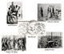

|
Project Development |
|

Bureau Office |
|
The Bureau of Refugees, Freedmen and Abandoned Lands was established
in March 1865. Its primary role was to safeguard the freedom of the
recently emancipated slaves. It was empowered to help Black and White
refugees who had been dispossessed by the war to return home. The
Bureau helped support them with sustenance, medicines, transportation,
direction, and care. It resolved disputes involving violence and
theft, and helped negotiate contracts between Freedmen and white employers.
The Bureau helped establish shcools and churches with the aid fo Northern
charities.
One of its primary achievements was the esablishment of schools which awakened blacks to the need for educuation and established public education in the South. The contracts it negotiated often perpetuated a system of black subservience as they often served the white employer's purposes more than the black employees'. The job of an agent of the Bureau was sometimes very dangerous, as many were northerners who were regarded as "capetbaggers." In Texas 13% or 31 out of 234 agents were victims of some sort of violence. Its success was tempered by a lack of funding and support from the federal government in conjuction with opposition to it on the local level.
|